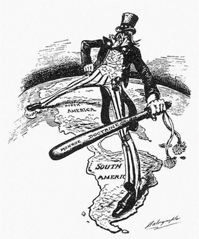

Le Conseil atlantique, qui réunissait les ministres de la défense d'un certain nombre de pays européens les 23 et 24 octobre dernier ne semble pas s'être déroulé dans une atmosphère de « franche camaraderie ». Un article récent publié sur le site du Réseau Voltaire titrait même : « L'OTAN sur le point d'imploser »
Avant d'aller plus loin, un petit rappel historique n'est pas inutile.
Quelques éléments :
A la question « pourquoi a-t-on fait l'OTAN », il est souvent répondu que c'était pour contenir une éventuelle invasion par les troupes soviétiques de Europe occidentale. C'est assez réducteur et partiellement inexact. Il y avait deux autres objectifs, qui répondaient à une problématique de plus long terme, sans lesquels l'OTAN aurait disparue dès la fin du bloc soviétique.
Il s'agissait surtout d'empêcher le retour des nationalismes européens et de pousser l'intégration européenne. Il est difficile de comprendre ce qui se passe sous nos yeux si nous omettons cet aspect des choses.
Il est également intéressant de prendre en compte les dates qui marquèrent les grandes orientations de l'OTAN et de les comparer à celles de certains changements dans la politique étrangère américaine. Le document « une brève histoire de l'OTAN 1» résume bien les choses.
Sous l'apparence d'une réponse à la guerre froide, une autre idéologie commençait à se profiler, ou plutôt se manifestait sous une autre forme.
Traditionnellement isolationnistes depuis 1823 et la « Doctrine de Monroe2 », l’entrée en guerre des États Unis le 7 décembre 1941 avait marqué une rupture. On aurait pu penser qu'une fois la guerre terminée, ils reviendraient à la situation antérieure. Or, les « forces mondialistes » étaient les grandes gagnantes de cette guerre et désiraient exploiter cette situation. L'Europe occidentale allait devenir pour elles un véritable laboratoire qui leur permettrait d'étudier in vivo le fonctionnement d'un futur gouvernement mondial.
Une nouvelle donne avec Donald Trump
L'élection de 2016 a marqué un changement considérable. Contrairement à ses prédécesseurs, Donald Trump n'est pas mondialiste. Son élection constitue probablement le revers le plus sérieux subi par le « deep state 3» depuis des décennies. Après quelques « tirs de réglage », les choses sont devenues plus sérieuses et nous assistons à un véritable « struggle for life » entre ces deux protagonistes. Ce qui s'est passé à la réunion du mois d'octobre va dans ce sens. Le retrait de l'armée américaine de Syrie a mis les européens dans une situation difficile. Bien que la plupart d'entre eux soient sous influence de cet état profond, donc des mondialistes, ils n'avaient jamais pensé à prendre des décisions concernant le futur de l'OTAN. Or, la décision unilatérale de Donald Trump, justifiée par un discours très « monroïste » indique clairement que le deep state ne peut plus compter sur l'armée américaine pour ses opérations extérieures. Finies les interventions au nom de la « liberté des peuples » qui se sont déroulées depuis trois ou quatre décennies. Or, le « bras armé » de rechange, qui est l'OTAN sur lequel le deep state aurait pu s'appuyer est en pleine crise existentielle. Emmanuel Macron lui-même dit que cette organisation est en état de « mort cérébrale 4 »
Le problème de la Turquie
Le retrait de l'armée américaine de la Syrie, dont les frontières, comme l'a rappelé le président américain, sont à plus de 7000 miles des Etats-Unis, est-on ne peut plus explicite. Le champ étant libre, la Turquie a pu lancer son opération contre les Kurdes du territoire syrien. L’Europe s'est crue obligée de réagir en vertu d'un principe de protection de la population.
Emmanuel Macron, dans un article publié dans le Figaro du 07 novembre, déclarait :
« Vous n'avez aucune coordination de la décision stratégique des États-Unis avec les partenaires de l'OTAN et nous assistons à une agression menée par un autre partenaire de l'OTAN, la Turquie, dans une zone où nos intérêts sont en jeu, sans coordination », a-t-il souligné. Et d'ajouter : « Ce qui s'est passé est un énorme problème pour l'OTAN. »
Belle perspicacité, Monsieur Macron, mais quelle solution portez-vous ?
Le problème incontournable de l'article 5 du Traité de L'Atlantique-Nord
Continuant « l'état des lieux » et rappelant le principe de l'article 5 qui prévoit la solidarité militaire en cas d'attaque d'un de ses membres, il pose la question :
« C'est quoi l'Article 5 demain ? Si le régime de Bachar el-Assad décide de répliquer à la Turquie, est-ce que nous allons nous engager ? C'est une vraie question. Nous nous sommes engagés pour lutter contre Daech. Le paradoxe, c'est que la décision américaine et l'offensive turque dans les deux cas ont un même résultat : le sacrifice de nos partenaires sur le terrain qui se sont battus contre Daech, les Forces démocratiques syriennes ».
Il fallait peut-être y penser avant, au lieu de participer inconsidérément à des opérations militaires dans lesquelles plus personne ne se retrouvait ? L'Europe, pensant combattre Daesh, a soutenu l'armée démocratique syrienne, en pensant que les jours de Bachar El Assad étaient comptés. Or, il est toujours vivant et agit en tant que chef d'un État souverain et son armée régulière combat l'armée démocratique. Et le mal est profond car les pays membres sont divisés entre eux.
Pour faire simple, il y a les USA et la Turquie d'un côté, et de l'autre un bloc (fragile) composé de l'Allemagne, la France et les pays du Bénélux.
Ces derniers voulaient une intervention en Syrie, contre l'armée syrienne et la Turquie afin de soutenir les kurdes. Les premiers ont refusé, d'où le blocage. Les anciens satellites soviétiques, aujourd'hui dans l'OTAN, ont tenté de « calmer le jeu », mais c'est bien l'existence même de l'OTAN qui est en cause.
Vers une nouvelle répartition ?
L'Allemagne, la France et le Bénélux voudraient bien prendre la tête de l'OTAN, mais n'en ont pas les moyens. L'Allemagne veut rester dans le cadre du Traité alors que la France voudrait plus d'intégration afin de créer une véritable force européenne, dont les Allemands ne veulent pas. Emmanuel Macron ne cache pas son jeu euro-mondialiste, ce qui ouvre encore davantage le fossé qui le sépare de la vision allemande. De leur côté, les Allemands sont très encadrés par leur constitution qui n'autorise que des missions de défense...
Cette situation entièrement nouvelle, créée volontairement par le Président Trump, est un des aspects de la lutte sans merci qu'il livre contre le deep state et il espère probablement que la disparition de l'OTAN portera un coup fatal à la tentative d'intégration de l'Union Européenne, ouvrant ainsi la voie au retour des nations et de leur souveraineté.
De Gaulle avait raison
Lorsque le général de Gaulle proposa le Traité de Paris en 1963 au chancelier Adenauer, il connaissait les faiblesses de l'OTAN. Il a par ailleurs fait que la France en quitte le commandement intégré dès 1966. Hélas, il ne suffit pas d'être à l'Élysée pour avoir cette clairvoyance. L'essentiel du traité de Paris portait sur justement la protection que la France offrait à l'Allemagne grâce au « bouclier nucléaire » dont elle s'était dotée. Cela était le véritable socle d'un projet de défense européenne, car le Traité, qui était conçu pour être conclu entre deux États, restait cependant ouvert à ceux qui aurait voulu l'adopter ensuite. Seulement, il s'inscrivait dans le cadre d'une « Europe des Nations et des Patries », dont le deep state ne voulait à aucun prix. C'est probablement Henry Kissinger qui a convaincu Kennedy du danger que ce traité pouvait représenter pour l'OTAN et les USA. Membre éminent du CFR (Council for Foreign Relations) dont l'implication dans le deep state est prééminente, il s'était spécialisé dans l'emploi de l'arme nucléaire. JFK a fait pression auprès de l'ambassadeur allemand pour que Schroeder, alors chef de la diplomatie allemande, fasse en sorte que le traité ne soit pas ratifié dans l'état et c'est ce qui s'est produit. Il apparaît aujourd'hui que les Allemands ont toujours beaucoup de mal à s'affranchir de la tutelle américaine et qu'ils ont peut-être quelques difficultés à interpréter les manœuvres de Donald Trump.
Quel avenir pour l'OTAN et, subsidiairement, pour l'Europe ?
Vu par l'Etat profond, l'OTAN et l'Europe sont indissociables. La meilleure preuve est que l'OTAN a survécu à la disparition de l'Union Soviétique. L'OTAN étant principalement un puissant fédérateur de l'Europe, elle devait continuer à s'opposer à tout projet de confédération qui aurait permis d'avancer vers une « Europe des Nations » qui serait aux antipodes du projet mondialiste. Emmanuel Macron, en proposant de faire évoluer l'OTAN vers une force européenne intégrée est dans le droit fil de l'action de l'État profond américain et son projet de gouvernement mondial.
Cette position ne sera pas tenable très longtemps et il probable que les partisans d'une Europe des Nations et des Patries (et ils sont de plus en plus nombreux, même si on les affubles du nom péjoratif et dédaigneux de populistes) vont faire pression avec tous les moyens dont ils disposent pour aller dans ce sens.

Partager cette page